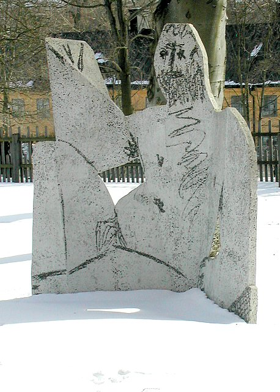

"Historia del Arte moderno"
"Para conocer la historia del arte moderno es importante entender cómo y cuándo nació. Además de abarcar un período cronológico que va desde 1850 a 1950, el arte moderno se considera que se inicia de la mano del movimiento impresionista y la influencia de figuras como Édouart Manet y finaliza con el surgimiento del Pop Art.

A lo largo de esos cien años surgieron una gran variedad de movimientos artísticos de vanguardia
y rupturistas con los cánones del arte clásico, especialmente en lo que a la figuración se refiere.
Entre los movimientos artísticos que se engloban dentro del arte moderno se destacan el impresionismo, el expresionismo, el cubismo, el futurismo,
el fauvismo o el surrealismo, entre otros.
Pero ¿cuál fue el origen del arte moderno? El arte moderno está asociados a una serie de transformaciones asociadas a los profundos cambios
económicos, políticos, sociales y culturales derivados de la revolución industrial vivida en la Europa de finales del siglo XIX.
Un nuevo contexto histórico que también favoreció la aparición de un nuevo tipo de artista. Un artista que deja de trabajar por encargo y bajo las órdenes
de mecenas e instituciones parar desarrollar sus propios proyectos, plasmando sus propias ideas, experiencias y gustos."
"Historia de la arquitectura moderna"
"La arquitectura moderna es un movimiento que surgió a finales del siglo XIX y principios del siglo XX en Europa y América del Norte.
Este movimiento se caracteriza por el uso de materiales innovadores y tecnologías avanzadas en la construcción de edificios y estructuras. La historia de la arquitectura moderna es una fascinante exploración de la evolución de la arquitectura a lo largo del siglo XX, desde los primeros rascacielos en Nueva York hasta la arquitectura postmoderna y contemporánea de hoy en día.
La arquitectura moderna es una corriente estética que se desarrolló a partir del siglo XX,
y que buscaba romper con los estilos tradicionales y antiguos de la arquitectura.
Esta corriente se caracteriza por la utilización de materiales y tecnologías innovadoras, así como por la funcionalidad y sencillez de las formas.

El surgimiento de la arquitectura moderna se puede entender como una respuesta a los cambios sociales y tecnológicos que se produjeron
en Europa y América en el siglo XIX. La Revolución Industrial, por ejemplo, trajo consigo una serie de avances tecnológicos que permitieron la producción en masa de materiales como el acero y el vidrio, lo que posibilitó la construcción de edificios más altos y con una mayor cantidad de luz natural.
En este contexto, algunos arquitectos comenzaron a cuestionar los estilos arquitectónicos
tradicionales y a buscar nuevas formas de construcción que se adaptaran a los nuevos tiempos.
Uno de los principales precursores de la arquitectura moderna fue el arquitecto suizo Le Corbusier, quien propuso
la utilización de materiales industrializados y la eliminación de ornamentos y detalles superfluos."